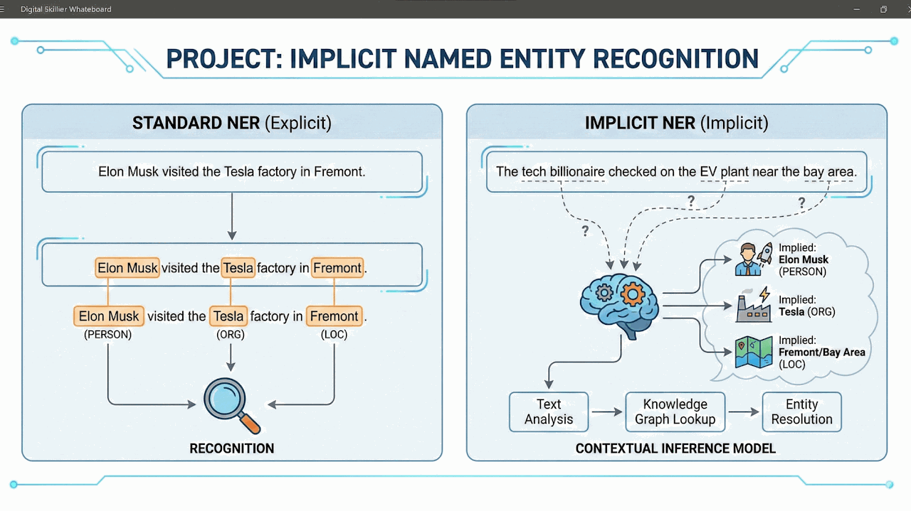
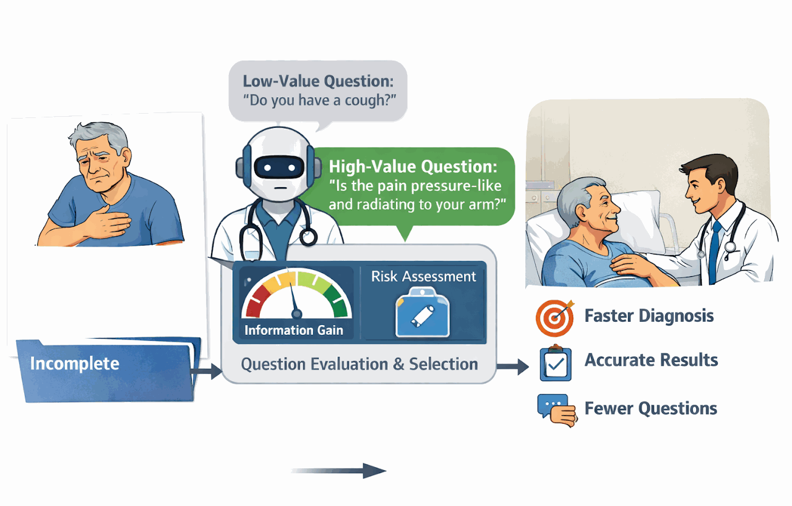
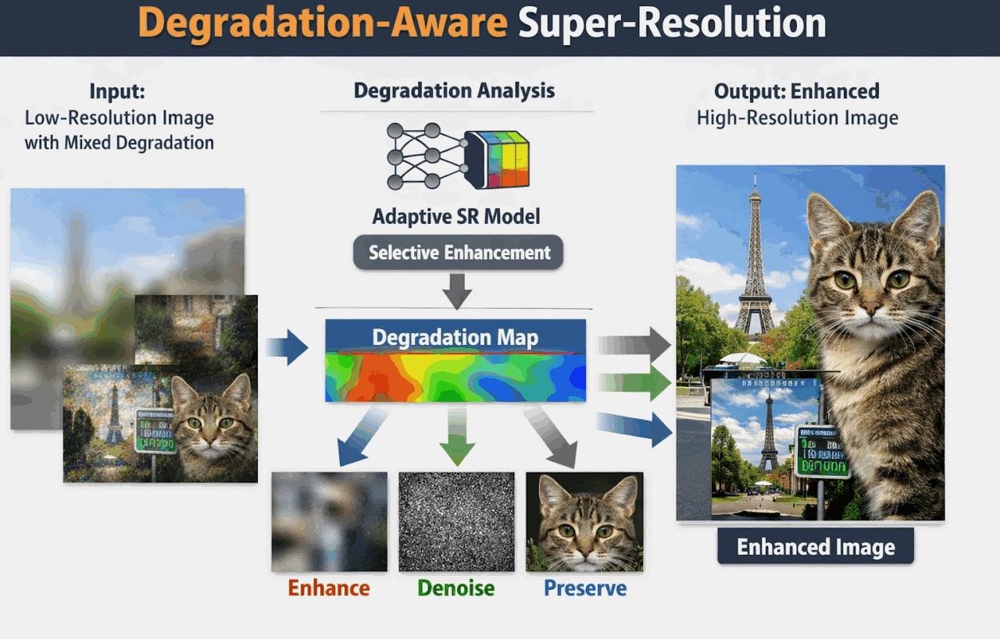

Implicit Entity Recognition In Text
Eden Moran
Implicit entity recognition in text using contextual inference and discourse-level cues.
I supervise these M.Sc. Intelligent Systems projects, each pursuing an active research direction. Open topics are listed under graduate opportunities; completed work is archived under former students.

Eden Moran
Implicit entity recognition in text using contextual inference and discourse-level cues.

Niv Cohen
Adaptive diagnostic questioning with LLMs for high-value information acquisition in clinical settings.
Yigal Meshulam
Decentralized multi-robot task allocation under zero-knowledge constraints and minimal signal sharing.

Matan Chazanovitz
Selective super-resolution that boosts degraded regions while preserving clean image areas.